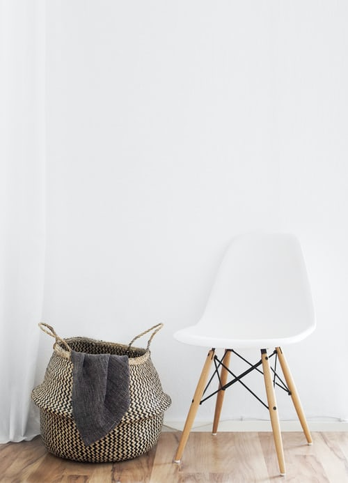
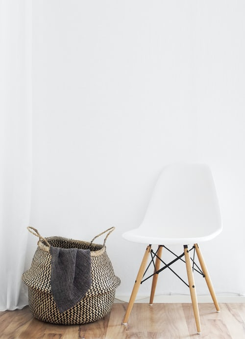

Less is More with The Minimalists
By Jaztin Buenaventura | February 27, 2020

Have you watched their Netflix show? If not, I bet after reading this article you will watched their documentaries. Minimalism has begoing strnog for years. The Minimalist aims to influence people to minimize their stuff and use only the basic needs for our daily lives and get rid of the exccess baggage.
Joshua Fields is one of the authors of The Minimalist along with Ryan Nicodemus. Their duo has been relased a several types of interviews and question and answer through podcast and their website. Also, they already produced a film, books, and doing a promotional tour. According to their film, they known each other for years. Life growing up was tough for them that is why they both conquer the world and make promises that they will be successful to afford the things they want and need to be happy.
A lot of people nowadays, I forgot what is the most important in life. They tend to buy and keep the stuffs they don't need in order to fufill the void on their heart. What is exactly a people needs? A new TV? Laptop? or latest iPhone? but what they really need is a community, bonding with friends and family and a place where they can improve theirselves. Being minimalist does not mean you do not nned to have a furniture on your house. It means you have to lessen it and get rid of things that is not necessary. Keep things that will lasts.
Based on the experience of The Minimalist. They already have everything. They were earning six figures on their late twenties and they can afford anything they want. However, they were still not happy. As time goes by, they keep asking theirselves what is the reason why they are still not feel fulfilled given the success they have already achieve. Then one day, Joshua Fields had lunch with Ryan Nicodemus on a Subway. As they eating their sandwiches, Ryan notice sometiong different with Joshua. "There is something different with you. I never seen you so happy before. Why?" he asked Joshua. After that, Joshua explain him about minimalism. After that day their life changed.
Minimalism is something we have to practice. Especially on our homes, we do not need a new stuffs for certain area of our house. Having a minimalist lifestyle can lead to a healthy and productive lifestyle. This can lead to fulfilled life and make your schedule make a free space and use this to bond with your family and friends with less distractions from things
How do you reflect yourself?
A lot of people nowadays, they forgot what is the most important in life. They tend to buy and keep the stuffs they don't need in order to fufill the void on their heart. What is exactly a people needs? A new TV? Laptop? or latest iPhone? but what they really need is a community, bonding with friends and family and a place where they can improve theirselves. Being minimalist does not mean you do not nned to have a furniture on your house. It means you have to lessen it and get rid of things that is not necessary. Keep things that will lasts.
Based on the experience of The Minimalist. They already have everything. They were earning six figures on their late twenties and they can afford anything they want. However, they were still not happy. As time goes by, they keep asking theirselves what is the reason why they are still not feel fulfilled given the success they have already achieve. Then one day, Joshua Fields had lunch with Ryan Nicodemus on a Subway. As they eating their sandwiches, Ryan notice sometiong different with Joshua. "There is something different with you. I never seen you so happy before. Why?" he asked Joshua. After that, Joshua explain him about minimalism. After that day their life changed.
Minimalism is something we have to practice. Especially on our homes, we do not need a new stuffs for certain area of our house. Having a minimalist lifestyle can lead to a healthy and productive lifestyle. This can lead to fulfilled life and make your schedule make a free space and use this to bond with your family and friends with less distractions from things
 

A cluttered home is often a reflection of different internal clutter: emotional clutter, spiritual clutter, financial clutter, mental clutter. When we clear the excess, we're able to deal with what's going on inside us.
- JOSHUA FIELDS MILLBURN
A lot of people nowadays, they forgot what is the most important in life. They tend to buy and keep the stuffs they don't need in order to fufill the void on their heart. What is exactly a people needs? A new TV? Laptop? or latest iPhone? but what they really need is a community, bonding with friends and family and a place where they can improve theirselves. Being minimalist does not mean you do not nned to have a furniture on your house. It means you have to lessen it and get rid of things that is not necessary. Keep things that will lasts.
Based on the experience of The Minimalist. They already have everything. They were earning six figures on their late twenties and they can afford anything they want. However, they were still not happy. As time goes by, they keep asking theirselves what is the reason why they are still not feel fulfilled given the success they have already achieve. Then one day, Joshua Fields had lunch with Ryan Nicodemus on a Subway. As they eating their sandwiches, Ryan notice sometiong different with Joshua. "There is something different with you. I never seen you so happy before. Why?" he asked Joshua. After that, Joshua explain him about minimalism. After that day their life changed.
Minimalism is something we have to practice. Especially on our homes, we do not need a new stuffs for certain area of our house. Having a minimalist lifestyle can lead to a healthy and productive lifestyle. This can lead to fulfilled life and make your schedule make a free space and use this to bond with your family and friends with less distractions from things
Based on the experience of The Minimalist. They already have everything. They were earning six figures on their late twenties and they can afford anything they want. However, they were still not happy. As time goes by, they keep asking theirselves what is the reason why they are still not feel fulfilled given the success they have already achieve. Then one day, Joshua Fields had lunch with Ryan Nicodemus on a Subway. As they eating their sandwiches, Ryan notice sometiong different with Joshua. "There is something different with you. I never seen you so happy before. Why?" he asked Joshua. After that, Joshua explain him about minimalism. After that day their life changed.
Minimalism is something we have to practice. Especially on our homes, we do not need a new stuffs for certain area of our house. Having a minimalist lifestyle can lead to a healthy and productive lifestyle. This can lead to fulfilled life and make your schedule make a free space and use this to bond with your family and friends with less distractions from things